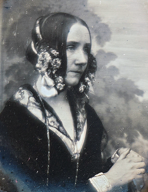

Ada Augusta King
Condessa de Lovelace (1815 – 1852)

Biografia e Legado
Ada Augusta King, Condessa de Lovelace (nascida Byron), foi uma brilhante matemática e escritora inglesa. Ela é reconhecida universalmente como a primeira programadora de computadores da história, tendo enxergado o potencial das máquinas muito além dos meros cálculos numéricos em uma época em que o computador nem sequer existia fisicamente.
A Máquina Analítica e o Primeiro Código
Durante sua colaboração com o cientista Charles Babbage, Ada trabalhou no projeto da Máquina Analítica. Ao traduzir um artigo sobre o engenho, ela adicionou uma extensa coleção de notas pessoais. Em uma dessas notas, desenvolveu um algoritmo detalhado para que a máquina calculasse os números de Bernoulli. Esse texto é considerado o primeiro programa de computador já escrito.
Visão Futurista
Enquanto Babbage focava apenas na capacidade computacional de calcular números, Ada previu que as máquinas poderiam processar símbolos, compor músicas complexas, manipular gráficos e transformar a sociedade. Suas ideias visionárias inspiraram gerações de cientistas, incluindo Alan Turing no século XX.
"A Máquina Analítica tece padrões algébricos assim como o tear de Jacquard tece flores e folhas." — Ada Lovelace